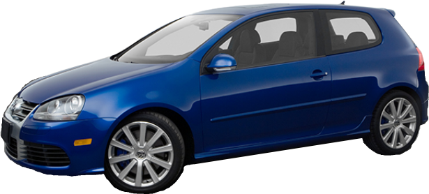
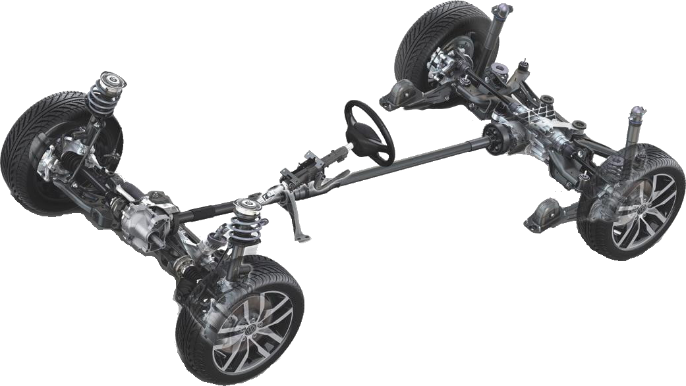
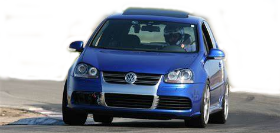

Overview
The 2008 Volkswagen R32 was a limited production vehicle based on the MK5 Golf platform. The R32 shares a lot of similarities with it's siblings when it comes to comfort and entertainment. At a glance this looks like a regular Golf or GTI but all the differences are under the hood and chassis. Production was limited for the R32 to just 5000 in the USA. Other countries also had limited production and seemingly unique to the USA is a 4-door version was never produced.
Engine

Volkswagen Engineers managed to stuff the 3.2L VR6 performance engine under the hood. The engine is transverse mounted, meaning the "front" of the engine is at the right side of the vehicle. The 3.2L 24 valve VR6 engine produces 250 HP at 6,250 RPM and 236 lb. ft. of torque at 3,000 RPM. With some minor modifications the engine power can be increased to around 275HP.
Drivetrain
The power of the VR6 is delivered though a DSG DQ250 6-Speed Automatic Transmission coupled with a Haldex 4 AWD system. The DSG DQ250 makes quick work of gear changes with a shift time of about 0.2 seconds while the Haldex 4 (AKA: 4-Motion) intelligent all wheel drive system can provide up to 90% of the power to the rear wheels.
Performance
The R32 shows competence by completing the 12.8 mile Nürburgring Nordschleife circuit in 8 minutes 49 seconds and was also featured on Top Gear where it did an impressive 1:30.4 lap time. Due to the added weight of the VR6 engine and AWD system Volkswagen Engineers mounted the suspension 10mm higher in the chassis than it's GTI and Golf/Rabbit siblings giving it a lower center of gravity and stance.
Badging
The R32 has many styling cues that differ from its siblings, the GTI and Golf/Rabbit. The most notable is the R32 badge on the exterior. The interior is unique where each R32 produced includes the serial number on the steering wheel.